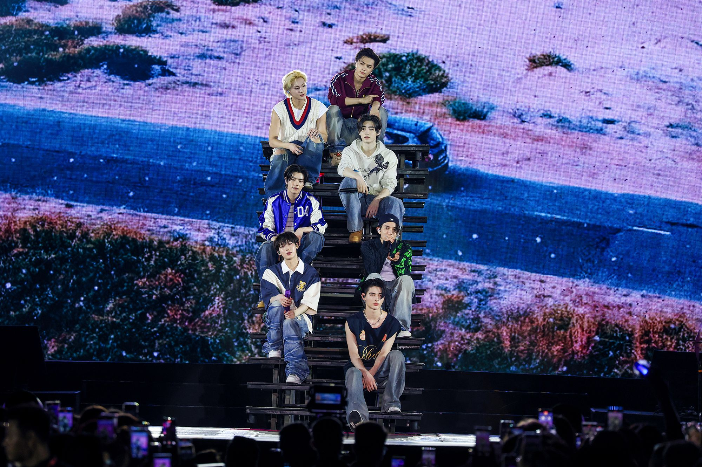
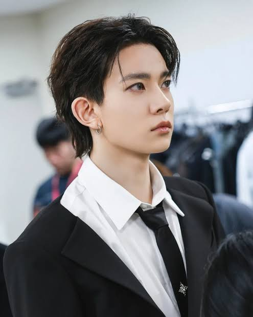

ENHYPEN

Enhypen is a South Korean boy band formed through the Mnet survival show "I-Land" in 2020. The group consists of seven talented members: Heeseung, Jay, Jake, Sunghoon, Sunoo, Jungwon, and Ni-ki.
Yang Jungwon

Yang Jungwon is a South Korean singer, songwriter, dancer, and television personality, best known as the leader, lead vocalist, and lead dancer of the boy group ENHYPEN.
FULL NAME:Yang Jungwon
STAGE NAME:Jungwon
POSITION:Leader
BIRTHDATE:February 09, 2004
NATIONALITY:Korean
MBTI:ISTJ
•Was a trainee for
three years and four months before joining the survival show I-Land.
• Ranked first in the final episode of I-Land, securing his place in ENHYPEN
• Known for his strong vocals, impressive dance skills, and charismatic stage presence.
• Has participated in numerous reality shows and variety programs with ENHYPEN.
Lee Heeseung

Lee Heeseung, known by his stage name Heeseung, is a South Korean singer and member of the boy group ENHYPEN. He is known for his strong vocals, charismatic stage presence, and being the center of the group.
FULL NAME:Lee Heeseung
STAGE NAME:Heeseung
POSITION:Main vocal
BIRTHDATE:October 15, 2001
NATIONALITY:Korean
MBTI:INFJ
•Trained for three years and one month before joining the survival show I-Land
• Ranked fifth in the final episode of I-Land, securing his place in ENHYPEN.
• Debuted with ENHYPEN on November 30, 2020.
• He has perfect pitch and can easily identify up to two to three notes simultaneously
• He can play the guitar and piano
• Known as an all-rounder and ace within the group
• His representative emoji is 🦌 (deer)
• Has participated in numerous reality shows and variety programs with ENHYPEN.
Heeseung is a talented and charismatic artist who has gained a large following for his musical abilities and personality.
Park Jongseong

He's known for his rapping skills, songwriting, and his participation in the survival show "I-Land."
BIRTH NAME:Jay Park
KOREAN NAME:Park Jongseong
STAGE NAME:Jay
POSITION:Main Rapper
BIRTHDATE:April 20, 2002
NATIONALITY:American-Korean
MBTI:ENTP
• Pre-Debut: Jay was a trainee under Big Hit Entertainment, along with fellow ENHYPEN members Heeseung, Sunghoon, and Jungwon. He also attended LP Dance Academy before joining Big Hit.
• ENHYPEN Debut: Jay debuted as a member of ENHYPEN on November 30, 2020, under BE:LIFT Lab.
• Solo Fandom Name: Blue Jays
Sim Jaeyun

Sim Jaeyun, better known by his stage name Jake, is a member of the South Korean boy group ENHYPEN. He is a rapper, vocalist, and songwriter, known for his charming personality, fluency in both Korean and English, and his love for his dog Layla.
FULL NAME:Sim Jaeyun
STAGE NAME:Jake
BIRTHDATE:November 15, 2002
NATIONALITY:Australian-Korean
MBTI:ISTJ
• Pre-Debut: Jake was a trainee under Big Hit Entertainment, along with fellow ENHYPEN members Heeseung, Sunghoon, and Jungwon. He also attended LP Dance Academy before joining Big Hit.
• I-Land: Jake participated in the survival show "I-Land," where he showcased his skills and earned third place with 1,148,967 votes.
• ENHYPEN Debut: Jake debuted as a member of ENHYPEN on November 30, 2020, under BE:LIFT Lab.
• Solo Fandom Name:Simjaes
Jake is a talented and well-rounded artist who continues to win over fans with his charm, talent, and dedication to his craft.
Park Sunghoon
Park Sunghoon, better known by his stage name Sunghoon, is a member of the South Korean boy group ENHYPEN. He is a vocalist, lead dancer, and visual, known for his elegant moves, graceful aura, and his past as a professional figure skater.
FULL NAME:Park Sunghoon
STAGE NAME:Sunghoon
BIRTHDATE:December 08, 2002
NATIONALITY:Korean
MBTI:ISTJ
• Figure Skating: Sunghoon was a professional figure skater from 2010 to 2020. He won numerous competitions, including the novice gold medal at the Lombardia Trophy in 2015 and the junior silver medal at the Asian Figure Skating Trophy in 2016 and 2017.
• Pre-Debut: Sunghoon became a trainee under Big Hit Entertainment in 2018 after being scouted while figure skating. He participated in the survival show "I-Land," where he showcased his skills and earned sixth place with 1,040,799 votes.
• ENHYPEN Debut: Sunghoon debuted as a member of ENHYPEN on November 30, 2020, under BE:LIFT Lab.
Sunghoon is a talented and dedicated artist who continues to impress fans with his skills and charming personality. He is a true example of hard work and dedication, both in his figure skating career and his music career.
Kim Sunwoo

Sunoo is a talented and well-rounded artist who continues to win over fans with his charm, talent, and dedication to his craft. He is a valuable member of ENHYPEN and is known for his dedication to his craft
FULL NAME:Kim Sunwoo
STAGE NAME:Sunoo
BIRTHDATE:June 24, 2003
NATIONALITY:Korean
MBTI:ENFP
• I-Land: Sunoo participated in the survival show "I-Land," where he showcased his skills and earned eighth place. However, the producers chose him to be the seventh and final member of ENHYPEN.
• ENHYPEN Debut: Sunoo debuted as a member of ENHYPEN on November 30, 2020, with their first mini-album "Border: Day One."
• Solo Fandom Name:Sunshines
NISHIMURA RIKI

Nishimura Riki, better known by his stage name Ni-ki, is a Japanese singer and dancer based in South Korea. He is a member of the South Korean boy band ENHYPEN.
FULL NAME:Nishimura Riki
STAGE NAME:Ni-ki
BIRTHDATE:December 09, 2005
NATIONALITY:Japanese
MBTI:ENFJ
• Pre-Debut: Ni-ki had a successful career as a child dancer in Japan. He appeared in commercials, music videos, and television shows.
• I-Land: Ni-ki competed in the survival show "I-Land," where he showcased his impressive dance skills and earned fourth place.
• ENHYPEN Debut: Ni-ki debuted as a member of ENHYPEN on November 30, 2020, with their first mini-album "Border: Day One."
Ni-ki is a talented and dedicated artist who continues to impress fans with his skills and charming personality. He is a valuable member of ENHYPEN and is known for his dedication to his craft